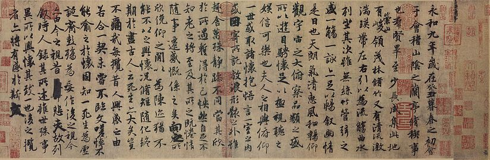
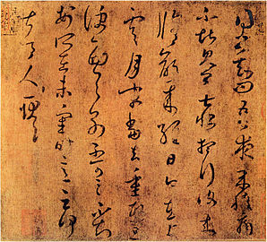
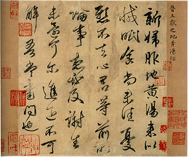
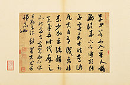
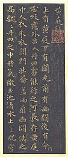
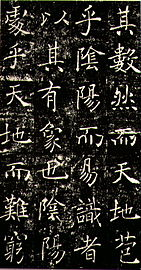

Introduction
Evolution and styles
Materials and tools
Technique and study
Gallery
Gallery

A copy of Wang Xizhi's 蘭亭序 (Lanting Xu)

A copy of Wang Xizhi's 上虞帖

A copy of Wang Xianzhi's 新婦地黃湯帖

On Calligraphy by Mi Fu

A copy of Wang Xizhi's Huang Ting Jing

Part of a stone rubbing of 雁塔聖教序 by Chu Suiliang